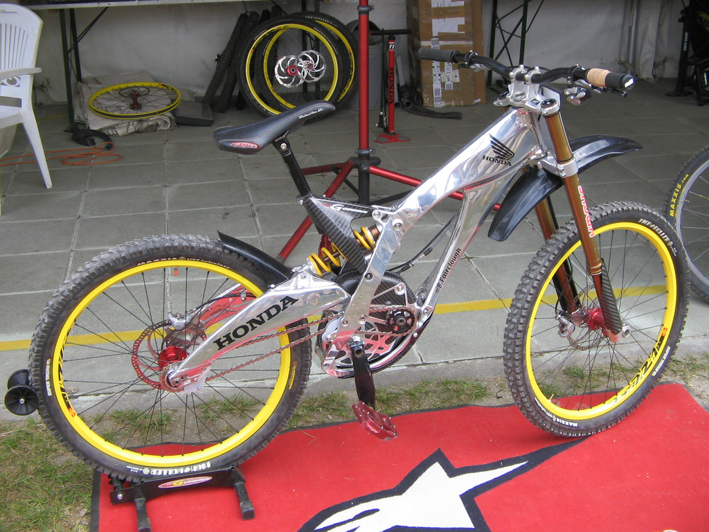
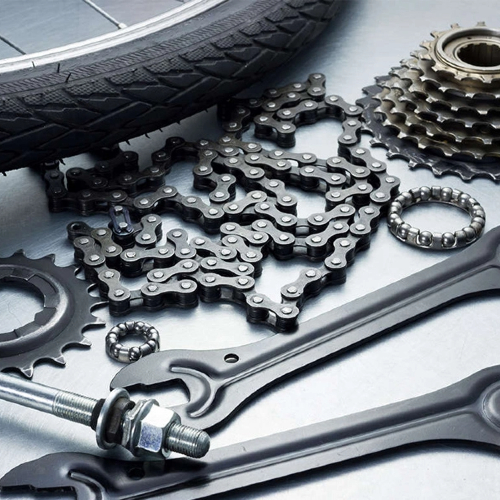
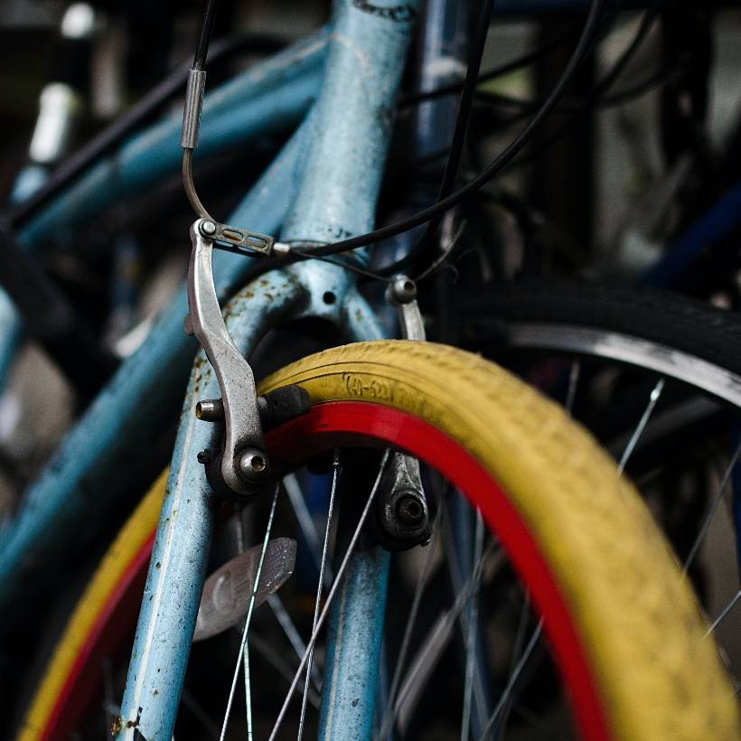

Bike Servicing
Our professional staff provides the best service
To enhance our servicing, we have improved the choices that our customers can make. We have designed our servicing around your bike, rather than having services that meet the needs of our workshop. We want you to be able to choose exactly the services you need, rather than pay for work that you may not require. All of our services include the following:
- Free health check for your bicycle
- First class servicing at affordable prices
- Servicing built around the needs of your bicycle
- Free expert aftercare advice


Gear Service £25
Our Gear Service is a full strip down and rebuild of the drivetrain of your bicycle. Our mechanics will clean, check and lubricate all the parts and recommend any replacement parts required. The aim is to ensure that your bicycle is returned to you with the drivetrain looking and operating as close to brand new as possible. The Gear Service includes all of the following:
- Full bike inspection and report
- Cables checked for stretch and wear
- Chain checked for stretch and wear
- Chain and derailleurs removed and cleaned
- Chain replacement if required (cost of chain not Included)
- Cable replacement if required (cost of cables not included)
- Parts refitted and lubricated
- Gears fully re-indexed

Break Service £20
Brake Service £20 Maintaining your brakes is one of the most important things you can do for your bike. Our Brake Service is specifically targeted at ensuring that your brakes work reliably when you need them. Whether you have V-brakes, cable disc brakes or a hydraulic system our mechanics will inspect, clean, service and adjust your brakes to optimise performance. The Brake Service includes all of the following:
- Full bike inspection and report
- Brake cables checked for stretch and wear or hoses checked for wear and tear
- Pad condition and wear checked and pads replaced if required (cost of pads not included)
- Braking surfaces checked and cleaned, and rotors straightened where required
- Cables replaced where required (cost of cables not included) or brake system bled or topped up as necessary (brake fluid free of charge)
- Full calliper alignment
- Full brake set up and adjustment
Wheel Service £25
In our Wheel Service, our mechanics will give your wheels the attention they need. Keeping your wheels serviced is vital to the smooth running of your bicycle and helps to avoid the minor wheel ailments that build up over riding time. Within the service we will look after the wheels themselves and the internal workings of the hubs to make sure that are returned to factory standard. The Wheel Service includes all of the following:
- Full bike inspection and report
- Wheels wiped and cleaned
- Hubs stripped, bearings checked, cleaned, greased or replaced where required (cost of cartridge bearings not included)
- Wheel alignment and spoke tension checked and adjusted
- Broken spokes replaced where possible (up to 3 spokes free of charge)
- Tyres checked and inspected for damage and wear
- Tyres replaced if required (parts not included)
- Additional labour charges (only if required)
- Full wheel rebuild £10 per wheel